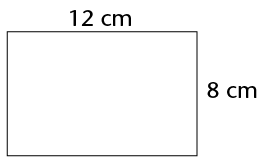
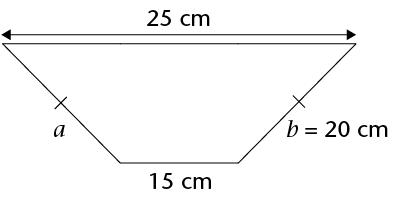
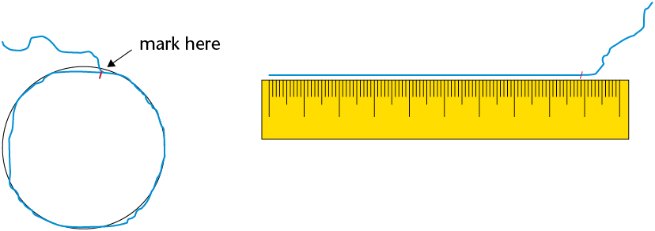
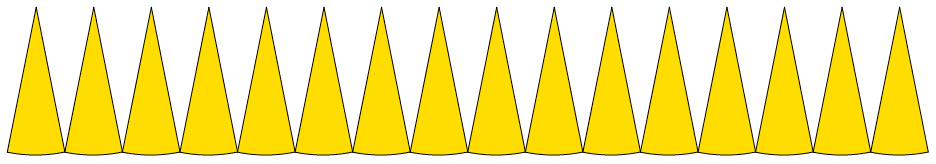
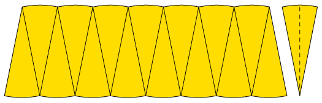

Perimeter and area of shapes
In Grade 7, you learnt to use formulae to calculate the perimeter (distance around a figure) of squares and rectangles, and the area (size of the flat surface) of squares, rectangles and triangles. In this chapter, you will revise the formulae you learnt, and you will investigate and use formulae to calculate the perimeter and area of circles. This chapter also includes some practice in converting between different units that we use to measure area, namely square millimetres (mm2), square centimetres (cm2), square metres (m2) and square kilometres (km2).
Perimeter of squares and rectangles
The perimeter (P) of a flat shape is the distance around a shape. We measure it in units such as millimetres (mm), centimetres (cm), metres (m) and kilometres (km).
Explaining the formulae for perimeter
1. Each block in the grid below measures 1 cm \times 1 cm. Calculate the perimeter of each shape by adding up the lengths and breadths.
|
Shape |
A |
B |
C |
D |
E |
F |
|
Length |
||||||
|
Breadth |
||||||
|
Perimeter |
2. Explain to a partner why the following formulae for perimeter are correct.
Perimeter of a square = \(4s\) or \((4 \times \text{length of a side})\)
Perimeter of a rectangle \(= 2(l + b)\) or \(2l + 2b \text{ (l is the length and b is the breadth)}\)
3. Use the formulae in question 2 to calculate the perimeters of shapes A to F above.
Calculating perimeters using formulae
Use formulae to calculate the perimeters of the following rectangular shapes.
1.
2.
3. 
4.
5.
6. 
Area of polygons
We use square units such as mm2, cm2, m2 and km2 to measure the area (A), or the size of a flat surface, of a shape.
Area of squares and rectangles
1. How many square units make up the area of the following shapes? Write the answers below or next to the shapes.

2. Each square on the grid above measures \(1 \text{cm} \times 1 \text{cm}\) (or 1 cm2). Write down the area of each shape above in square centimetres (cm2).
Below are formulae for calculating area:
\(\text{Area of a square} = s^2\)
\(\text{Area of a rectangle} = l \times b\)
3. Calculate the areas of shapes C, E and F in question 1 using the formulae.
Solving more perimeter and area problems
1. The perimeter of a square is 8 cm. What is the length of each side?
2. The area of a rectangle is 40 cm2 and its length is 8 cm. What is its breadth?
3. The perimeter of a square is 32 cm. What is its length and area?
4. The area of a rectangle is 60 cm2 and its length is 12 cm. What is its breadth and perimeter?
5. A rectangular yard has an area of 6 000 m2. If the breadth is 20 m, find the length and the perimeter.
6. A square has an area of 10 000 m2. What is the perimeter?
Area of triangles
In Grade 7 you learnt how to calculate the area of a triangle with the following formula:
\(\text{Area of a triangle} =\frac{1}{2}(\text{base} \times \text{perpendicular height}) =\frac{1}{2}(b \times h)\)
Any of the three sides of a triangle can be regarded as the base.

The shortest distance from the vertex opposite the chosen base to the base is called the height of the triangle with respect to the chosen base. If the triangle is obtuse angled, the line showing the height is outside the triangle. For example, in \(\triangle JKL\), JM is the height with respect to the base KL.
To calculate the area of a triangle with the above formula, the height with respect to the chosen base must be used.
Problems involving the area of triangles
1. Complete the table below by writing down the name of each base and its matching height in \( \triangle ABC\) and \(\triangle DEF\):

|
Base |
||||||
|
Height |
2. Calculate the area of the following triangles.
(a)
(b)

(c)
Area of composite shapes
A composite shape is made up of a number of other shapes. Often, we can break up the shape into rectangles, squares or triangles to help us work out the area of the shape.
1. Use a ruler and pencil to divide each of the following shapes into rectangles, squares and/or triangles. The first one has been done for you.
2. Work out the length of the sides you need and then calculate the area of the shapes. Round off your answers to two decimal places where necessary.
(a)

(b)
(c) 
(d)
Perimeter of circles
Parts of a circle
In Grade 7, you learnt about the different parts of a circle, including the following:
The centre of a circle is the point in the middle (centre) of the circle.
The circumference (\(C\)) is the distance around the circle. It is the length of the curved line that forms the circle.
The radius (\(r\)) is the line segment drawn from the centre of the circle to any point on the circle.
The diameter (\(d\)) is the line segment passing through the centre of the circle and joining any two points on the circle.
The length of the radius is always half the length of the diameter: \(r = \frac{1}{2}d\)
The length of the diameter is always twice the length of the radius: \(d = 2r\)
1. Use a ruler to measure the radii (plural of radius) given below and then write down the lengths of both the radii and diameters of the circles in the table below.

|
Circle |
A |
B |
C |
|
Radius (mm) |
|||
|
Diameter (mm) |
2. Write down the diameters of circles with the following radii:
(a) \(r\) = 8 cm
(b) \(r\) = 1 m
(c) \(r\) = 4,5 cm
(d) \(r\) = 6,2 m
Relationship between a circle's circumference and diameter
If you do not know where the centre of a circle is, you can determine it by measuring the diameter as follows:
- Mark a point on the circle from which to measure.
- Keeping the ‘0’ of the ruler in place, move the other end of the ruler until you find the longest distance. This is the diameter.
You can get a rough measurement of the circumference of a circle as follows:
- Use a string and lay it around the edge of the circle as accurately as possible.
- Mark the string when you reach the point where you first started measuring.
- Straighten the string and measure the length using a ruler.

Circles of different sizes are given below. The circumferences are shown in the table in question 2 on the next page, rounded off to two decimal places.
1. Measure the diameter of each circle and write it in the table.

2. Use a calculator to work out the answers in the last column. (Round off to two decimal places.)
|
Circle |
Diameter (cm) |
Circumference (cm) |
Circumference \(\div\) diameter |
|
A |
15,71 cm |
||
|
B |
9,42 cm |
||
|
C |
7,85 cm |
||
|
D |
12,57 cm |
||
|
E |
21,99 cm |
3. What do you notice?
Pi (\(\pi\)) and the formula for the circumference of a circle
In the previous activity, you should have found that the circumference of a circle divided by its diameter is always equal to the same number. This number is a constant value and is called pi. Pi is a Greek letter and its symbol is π.
You also worked with values rounded off to two decimal places (hundredths). But actually, π is an irrational number. This means that the numbers after the decimal comma go on and on without ending and without repeating. On a calculator, you will find that the value for π is given as 3,141592654 (correct to 9 decimal places).
When we use π in our calculations, we usually round it off as \(\pi \approx \frac{22}{7}\) or 3,14.
In the previous activity, you found that, for any circle, \(\frac{C}{d} = \pi\) (the circumference divided by its diameter is equal to the constant, π). Therefore, if we multiply the diameter of a circle by π, we should get the circumference of the circle:
\(\text{Circumference of a circle (C)} = \pi d \\ =\pi (2r) \\ = 2 \pi r \)
Using the formula for the circumference of a circle
In the following calculations, use π = 3,14 and round off answers to two decimal places where necessary.
1. Calculate the circumference of a circle with:
(a) a radius of 2 cm
(b) a radius of 10 mm
(c) a diameter of 8 cm
(d) a diameter of 25 mm
(e) a radius of 40 m
(f) a diameter of 100 m
2. Calculate the radius and circumference of a circle with a diameter of:
(a) 125 mm
(b) 70 cm
3. Calculate the radius of a circle with a circumference of:
(a) 110 cm
(b) 200 m
Area of circles
Investigating the formula for the area of a circle
1. Each square in the grid below measures 1 cm by 1 cm (1 cm2).
(a) Count the number of squares inside the circle. Estimate what the parts of squares add up to. What is the area inside the circle?
(b) What is the radius (r) of the circle?
(c) How accurate is the above method for finding the area of a circle?
(d) How can we improve on this method of using squares to approximate the area of a circle?
(e) Suppose instead of using 1 cm by 1 cm squares we use 0,5 cm by 0,5 cm squares to measure the area of the circle above. Which of the two measurements of area will be more accurate? Explain.
(f) Now suppose we use squares that are 0,25 cm by 0,25 cm. Which measurement will be the best estimate of the three?
We can estimate area by placing a square grid over the surface of which we want to estimate the area. We can then count approximately how many squares are needed to cover the surface we wish to measure.
In the case of a curved surface like a circle the area cannot be accurately determined in this way; it can only be estimated. The accuracy of the estimate depends on the size of the squares used.
In the activities that follow we are going to develop a formula for calculating the area of a circle.
Consider the circle alongside. It has been divided into 16 identical sectors. We will use a technique that mathematicians sometimes use to transform a shape to one that they know something about in order to solve a problem.

The challenge here is that we want to find a way to calculate the area of a circle. We know how to find the area of a rectangle. Is there a way that we can redraw a circle so that it looks something like a rectangle? One way to go about this is to divide the circle into 16 identical sectors. We then cut the circle into 16 different pieces as shown below.

We then re-arrange the sectors like this.
2. We have transformed the circle by cutting it into identical sectors and re-arranging them. What does this shape look like?
3. What does the
(a) height of the shape above match in the original circle?
(b) base of the shape match in the original circle?
4. Is there a way in which we can make the challenge easier for ourselves?
5. The last sector in the arrangement below is further divided in half.
(a) What shapes are formed from dividing the sector?

(b) What new shape will be formed by placing each half of the sector on either side of the shape above?
6. What does the
(a) height of the new shape correspond to in the original circle?
(b) base of the new shape correspond to in the original circle?
You have probably noticed that when we divide a circle into many sectors and then re-arrange the sectors, they form a rectangular shape. Try to make sense of the argument presented below.
7. (a) Use the formula \(A = \pi r^2\) to calculate the area of a circle with a radius of 4 cm. Use \(\pi = 3,14\).
(b) How close is this answer to the number of squares you calculated inside the circle in question 1 on page 65?
From now onwards we will use the formula \(A = \pi r^2\) to calculate the area of a circle, where r is the length of the radius. You will be given the value of π to use in the calculations. The value of π is usually given correct to 2 decimal places as 3,14.
8. How can we interpret \(r^2\) in the formula \(A = \pi r^2\)? Use the figure on the right to answer the questions below:

(a) What is the radius of the circle?
(b) The length of the blue square is 1,5 cm. What is its area?
(c) What is the value of \(r^2\)?
(d) If r is the radius of a circle, then \(r^2\) is
Using the formula for the area of a circle
In the following calculations, use 3,14 as an approximation for π and round your answers off to two decimal places. Use a calculator where necessary.
1. Calculate the area of a circle with a radius of:
(a) \(r = 8\) cm
(b) \(r = 4,5\) cm
2. Calculate the radius of circles with the following area:
(a) 100 m2
(b) 76 m2
3. Work out the area of the shaded parts of the following shapes:
(a)
(b)

Converting between square units
You already know how to convert between units we use to measure lengths or distances, for example mm, cm, m and km:
|
To convert |
Do this |
To convert |
Do this |
|
cm to mm |
\(\times 10\) |
mm to cm |
\(\div 10\) |
|
m to cm |
\(\times 100\) |
cm to m |
\(\div 100\) |
|
km to m |
\(\times 1 000\) |
m to km |
\(\div 1 000\) |
Use this knowledge to work out how to convert between square units (mm2, cm2, m2 and km2).
1. Convert cm2 to mm2
\( \begin{align}1 \text{ cm}^2 &= 1 \text{ cm} \times 1 \text{ cm} \\ &= 10\text{ mm} \times 10\text{ mm} \\ &= .................. \end{align}\)
2. Convert m2 to cm2
\( \begin{align}1 \text{ m}^2 &= 1 \text{ m} \times 1 \text{ m} \\ &= ......\text{ cm} \times ......\text{ cm} \\ &= .................. \end{align}\)
3. Convert km2 to m2
\( \begin{align}1 \text{ km}^2 &= ...... \text{ km} \times ...... \text{ km} \\ \\ &= .................. \\ &= .................. \end{align}\)
4. Convert mm2 to cm2
\( \begin{align}1 \text{ mm}^2 &= 1 \text{ mm} \times 1 \text{ mm} \\ &= 0.1\text{ cm} \times 0.1\text{ cm} \\ &= .................. \end{align}\)
5. Convert cm2 to m2
\( \begin{align}1 \text{ cm}^2 &= ...... \text{ cm} \times ...... \text{ cm} \\ \\ &= .................. \\ &= .................. \end{align}\)
6. Convert m2 to km2
\( \begin{align}1 \text{ m}^2 &= ...... \text{ m} \times ...... \text{ m} \\ \\ &= .................. \\ &= .................. \end{align}\)
7. Complete the following table.
|
To convert |
Do this |
To convert |
Do this |
|
|
cm2 to mm2 |
mm2 to cm2 |
|||
|
m2 to cm2 |
cm2 to m2 |
|||
|
km2 to m2 |
m2 to km2 |